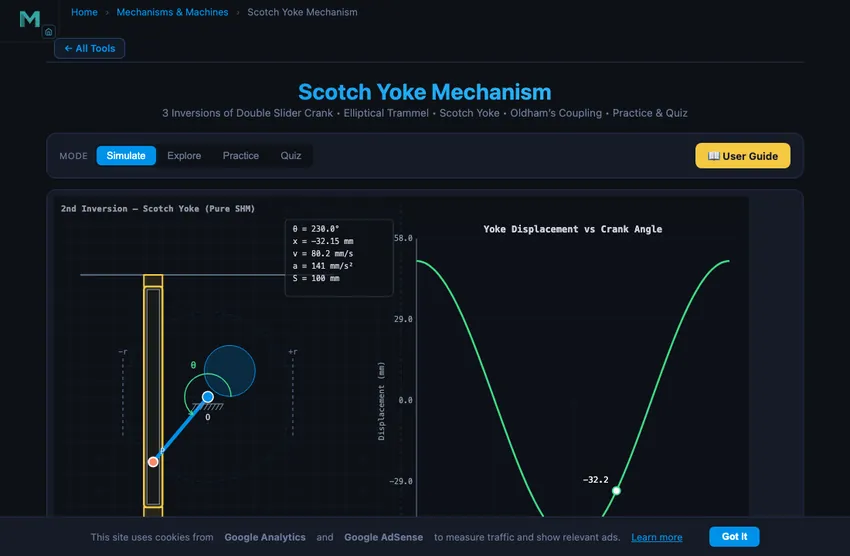
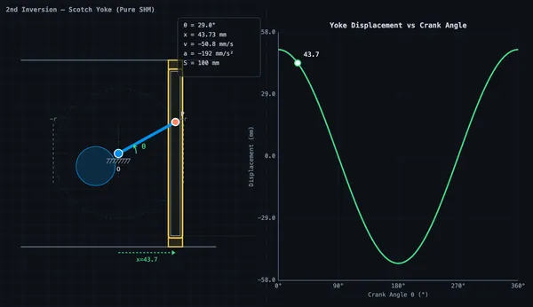

Scotch Yoke Mechanism
3 Inversions of Double Slider Crank • Elliptical Trammel • Scotch Yoke • Oldham’s Coupling • Practice & Quiz
1 Overview
The Scotch Yoke Mechanism Simulator covers all 3 inversions of the double slider crank chain: Elliptical Trammel, Scotch Yoke, and Oldham’s Coupling. Each inversion fixes a different link to produce distinct motion types — elliptical paths, pure SHM reciprocation, and offset shaft coupling.
This simulator provides real-time kinematics: displacement, velocity, and acceleration graphs, along with Explore, Practice, and Quiz modes for comprehensive learning.
2 Loading the Mechanism
The simulator opens in Simulate mode with the 2nd Inversion (Scotch Yoke) active. The split canvas shows the animated mechanism on the left and a real-time kinematics graph on the right.
- Switch between Inversions (1st, 2nd, 3rd) using the inversion tabs.
- Use the Crank Radius r slider to adjust the crank radius.
- Adjust RPM to change the angular velocity.
- The Bar Length L and Shaft Offset d sliders appear for the relevant inversions.
- Click the canvas or press Space to pause/resume the animation.
3 The Three Inversions
1st Inversion — Elliptical Trammel: The frame is fixed, providing two perpendicular slots. Two sliders constrained in the slots are connected by a rigid bar. Every point on the bar traces an ellipse. Adjust the bar length to change the ellipse shape.
2nd Inversion — Scotch Yoke: A rotating crank with a pin slides inside a vertical slot in the yoke. The yoke reciprocates horizontally with pure simple harmonic motion: x = r·cos(θ). The SHM vs Crank graph compares this against a slider-crank.
3rd Inversion — Oldham’s Coupling: Two parallel shafts with a lateral offset are coupled by a central floating disc. Each shaft has a tongue engaging a slot in the disc. Both shafts rotate at the same speed despite the offset.
4 Geometry & Theory
Switch to Explore to study 12 concepts organised into three categories:
- Basics — Scotch Yoke anatomy, how it differs from slider-crank, pure SHM, stroke calculation.
- Kinematics — Displacement equation, velocity analysis, acceleration analysis, energy in SHM.
- Design & Applications — Stirling engines, valve actuators, compressors, advantages and disadvantages.
Each concept includes clear explanations, formulas, and worked examples suitable for engineering education.
5 Try a Problem
Practice mode generates random numerical problems on yoke displacement, velocity, acceleration, stroke length, and angular velocity. Enter your answer and receive immediate feedback with a step-by-step solution.
Quiz mode tests your knowledge with 5 randomised questions from a pool of 15, mixing multiple-choice and numerical problems. Review all answers after completion.
6 Design Notes
- Enable the Slider-Crank Overlay to visually compare the two mechanisms and understand why the Scotch Yoke produces purer SHM.
- Switch between graph types to see how displacement, velocity, and acceleration relate as derivatives of each other.
- Remember: for the Scotch Yoke, x = r·cos(θ), v = −rω·sin(θ), a = −rω²·cos(θ).
- The stroke is always exactly 2r regardless of any other parameter.
- Use Explore mode as a quick reference for formulas before attempting Practice problems.
- Press Arrow Left/Right to step through crank angles manually.
What Is the Double Slider Crank Chain?


The double slider crank chain is a fundamental four-bar kinematic chain consisting of two sliding pairs and two turning pairs. Unlike the single slider crank chain used in IC engines, this chain constrains motion through two perpendicular sliding axes connected by a rigid link. By fixing different links in the chain, three distinct kinematic inversions are obtained — each producing a different type of motion and serving unique industrial applications.
The Three Inversions
The 1st inversion (frame fixed) produces the Elliptical Trammel, where two sliders move in perpendicular fixed slots and a connecting bar traces elliptical paths. The 2nd inversion (one slider fixed) gives the Scotch Yoke mechanism, which converts rotary motion into pure simple harmonic motion with displacement x = r·cos(θ). The 3rd inversion (connecting link fixed) produces Oldham’s Coupling, which transmits rotation between two parallel shafts with a lateral offset at equal angular velocity.
Scotch Yoke — Pure SHM Output
The defining feature of the Scotch Yoke (2nd inversion) is its pure SHM output. The yoke velocity is v = −rω·sin(θ) and acceleration is a = −rω²·cos(θ), with no higher harmonics. Applications include Stirling engines, quarter-turn valve actuators, reciprocating compressors, and vibration shakers for mechanical testing.
Oldham’s Coupling & Elliptical Trammel
Oldham’s Coupling (3rd inversion) uses a central floating disc with perpendicular slots to couple two offset parallel shafts at equal speed. It is widely used in power transmission where slight misalignment exists. The Elliptical Trammel (1st inversion) is a drawing instrument — every point on the connecting bar traces an ellipse, making it useful in engineering drawing and CNC applications.
Why Scotch Yoke vs Slider-Crank Matters
Both mechanisms turn rotation into reciprocation, but the motion characteristics differ in ways that drive different applications. The slider-crank produces near-sinusoidal motion with small asymmetric harmonics from the connecting-rod geometry. The Scotch yoke produces pure sinusoidal motion — the yoke displacement is exactly y = r·cosθ, no higher harmonics, no asymmetry. For applications requiring true SHM, the Scotch yoke is the textbook answer.
The trade-offs:
- Slider-crank wins on side load. The connecting rod transmits force along its length most of the time; only the small angle introduces side load on the cylinder wall. Suitable for high-pressure applications (combustion engines, hydraulic cylinders).
- Scotch yoke wins on motion purity. True SHM output, useful where the output drives downstream mechanisms tuned for pure cosine input (vibration testers, mechanical sweep generators).
- Slider-crank wins on wear. Connecting rod uses well-lubricated journal bearings. Scotch yoke uses sliding contact in the slot — high wear at high speed/load.
- Scotch yoke wins on compactness. No connecting rod means the mechanism is shorter for the same stroke.
Real-world balance: combustion engines use slider-crank universally. Quarter-turn valve actuators, small reciprocating compressors, and vibration shakers use Scotch yoke. Steam locomotive valve gear used Scotch yoke variants in some designs because the pure SHM matched the steam-port timing requirements better than slider-crank’s asymmetric motion.
References
- Norton, R. L. — Design of Machinery, 6th ed., Chapter 4 covers the kinematic chains and inversions.
- Shigley & Uicker — Theory of Machines and Mechanisms, 5th ed.
Who Uses This Simulator?
This tool is designed for mechanical engineering students, kinematics learners, and instructors teaching mechanisms and machine theory. Whether you are studying for exams, learning about kinematic inversions, or demonstrating the double slider crank chain in a classroom, this simulator provides an interactive, visual approach to mastering all three inversions and their real-world applications.
Explore Related Simulators
If you found this Scotch Yoke simulator helpful, explore our Slider-Crank Mechanism simulator, Four-Bar Linkage simulator, Cam & Follower simulator, and Simple Harmonic Motion simulator for more hands-on practice.